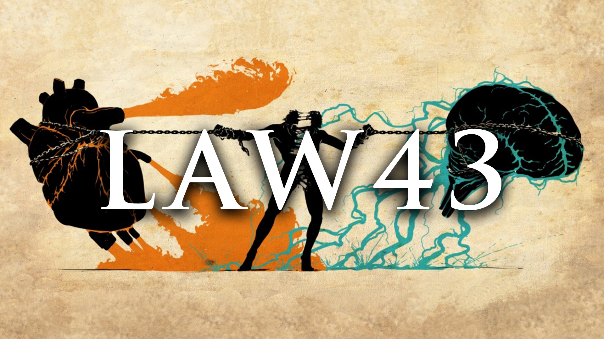
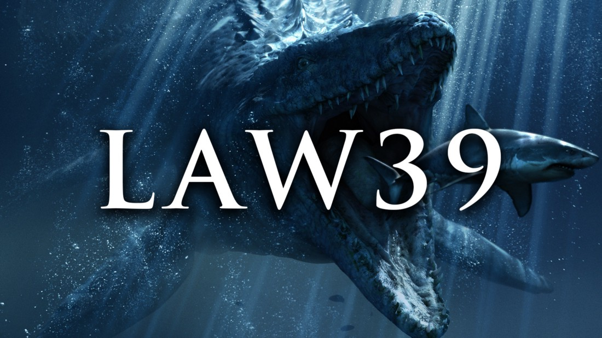

Law 43: "Work on the Hearts and Minds of Others"
October 2, 2022 by Alexander Thomas

This law in the book "The 48 Laws of Power" is relatively straight forward as it details that one of the
crucial ways to have loyality be given to you is to "seduce" the hearts and minds of those around you.
Play to their likes and goals. Regale them in tales of their achievements, cherish memories or adventures
they may have had, be considerate of the emotions or situations they may face and use these to your benefit
in the long run as if you ignore the dreams, aspirations and goals of others, they will grow to hate you.
This is filler to complete the remaining space as I've run out of ideas and need to test what I have for textwrapping
among other things lol. Here we go, blah blah blah blue blue, test test test test test test, lets go.
Law 39:"Stir up waters to catch Fish"
October 1, 2022 by Alexander Thomas

This law in the book "The 48 Laws of Power" speaks about emotions. It speaks to enraging your enemies or
those opposed to you in order to sabotage them. In rage/anger, we tend to make mistakes. Creating this in
your enemiess leads to an imbalance in them, stiring the wrong emotions to make them fall. You use this to
your advantage. Play them like the fiddle they are, sabotage their progress then when the moment is right,
you strike them down and claim your victory in battle and probably war. In a direct quotation, “Anger and emotion
are strategically counterproductive. You must always stay calm and objective. But if you can make your enemies angry
while staying calm yourself you gain a decided advantage. Put your enemies’ off-balance: Find the chink in their vanity
through which you can rattle them and you hold the strings.”